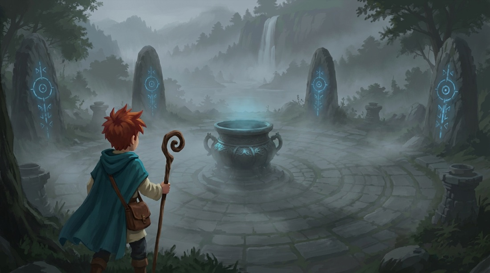
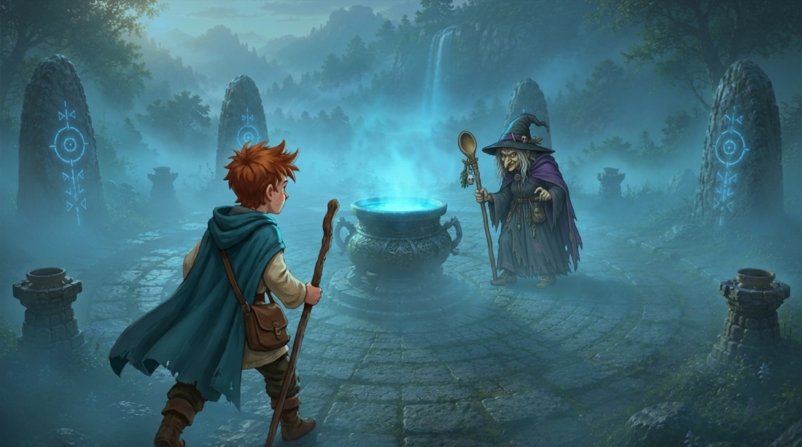
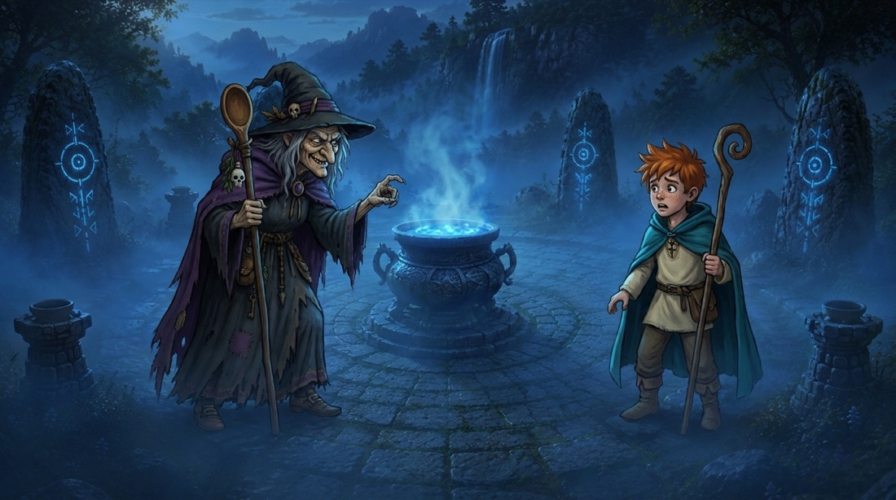
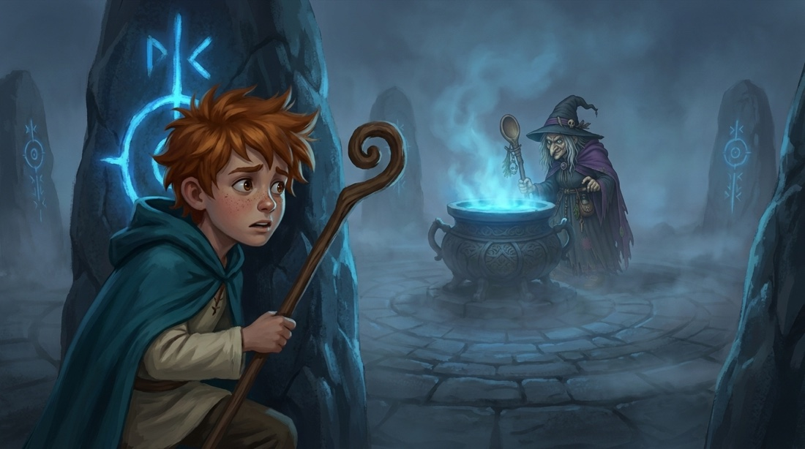

Finn loopt voor het eerst de mistige runenvallei binnen, ziet de grote stenen ketel — en de kromme oude heks die hem met een knokige vinger dichterbij probeert te lokken. Spannend, dreigend, en een tikje eng. (Het slot van het huidige avontuur: “wordt vervolgd”.)

Finn stapt uit het donkere bos de oude runencirkel binnen. Door de mist doemen de staande runenstenen en de grote ketel op, vaag blauw gloeiend. Klein en voorzichtig.

Finn verstijft: aan de overkant van de gloeiende ketel staat een kromme oude heks in de mist. Hij klemt zijn staf vast, schouders gespannen.

De heks leunt voorover en wenkt met een knokige vinger en een sluwe grijns over de ketel heen. Finn aarzelt, grootogig en een beetje bang.

Finn gluurt half verscholen achter een gloeiende runensteen naar de heks die in haar ketel roert. Zijn gezicht angstig — wat wil ze van hem?
‹ terug naar storyboards · gegenereerd in Higgsfield · referentiepagina (niet voor de site).